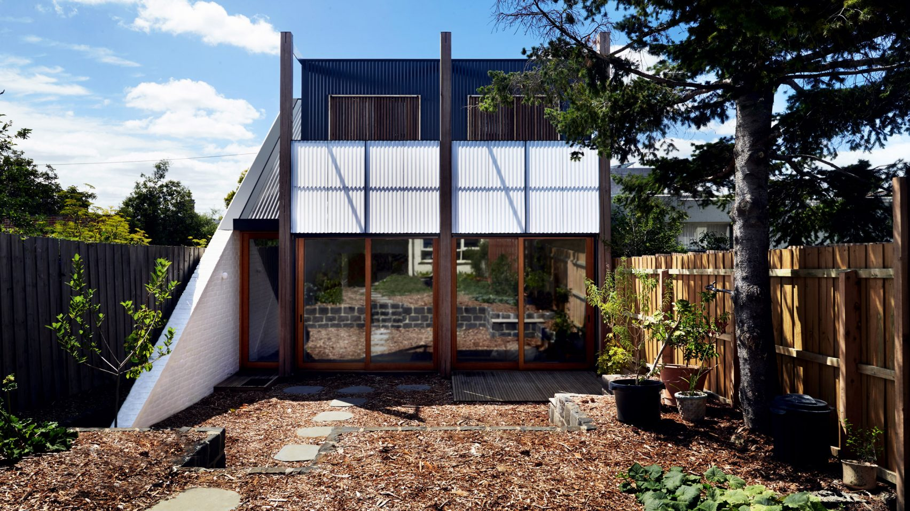
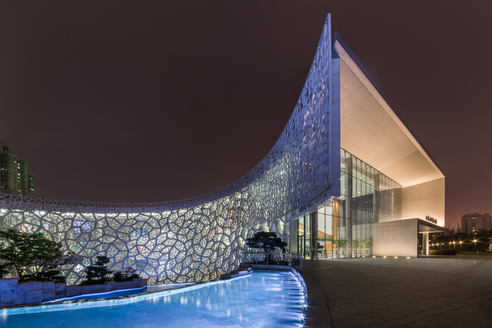
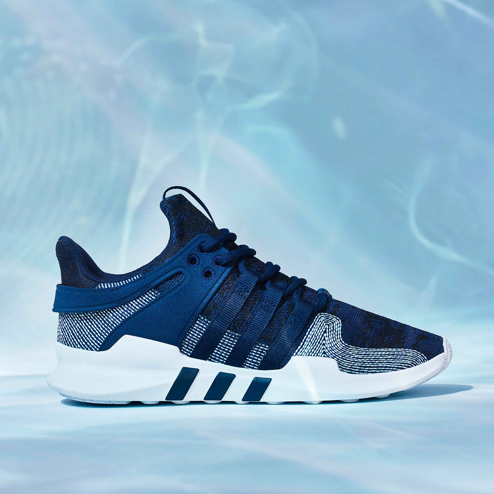
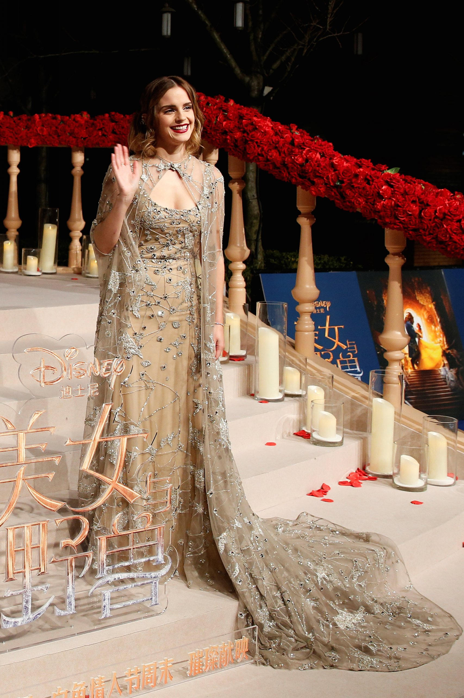
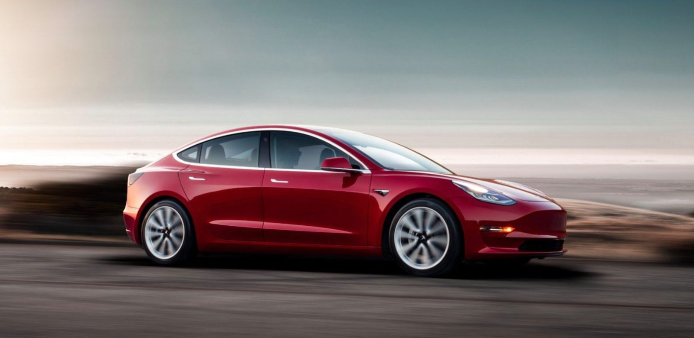
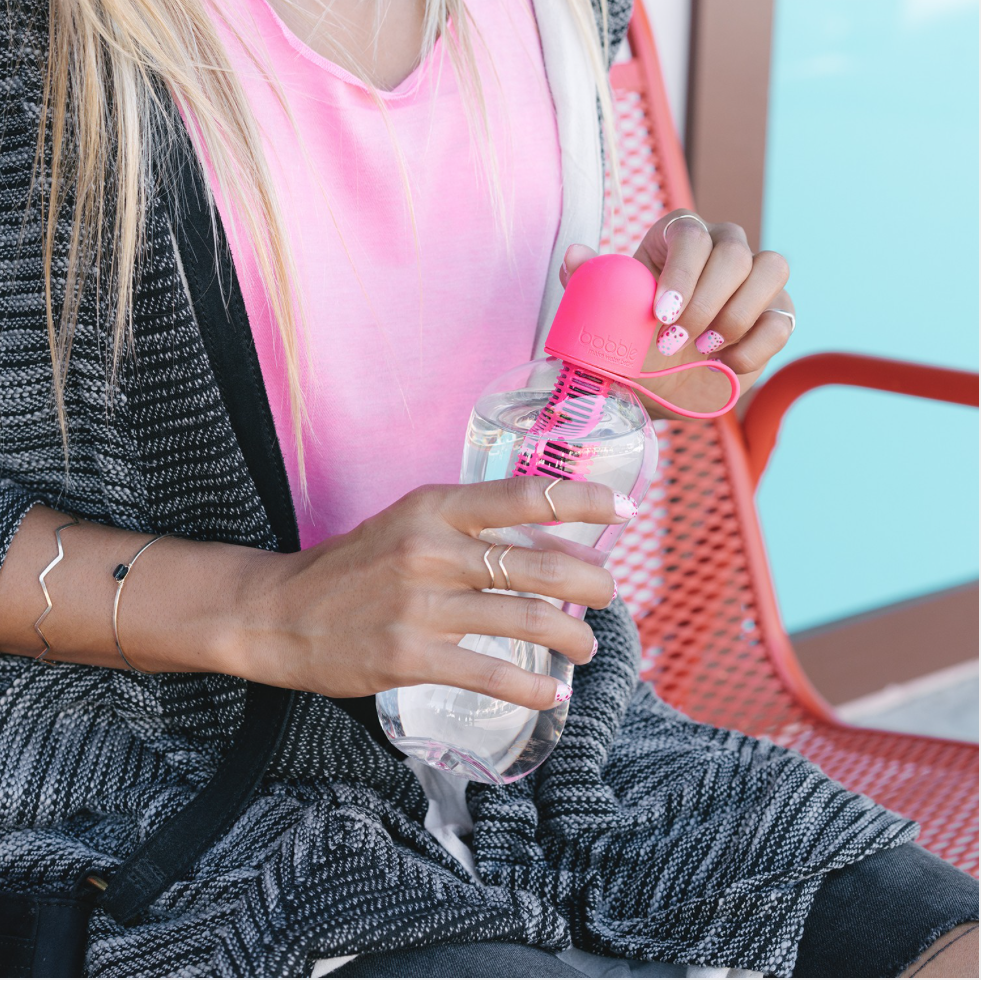
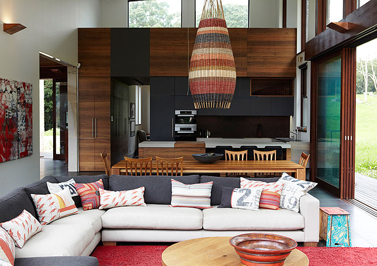
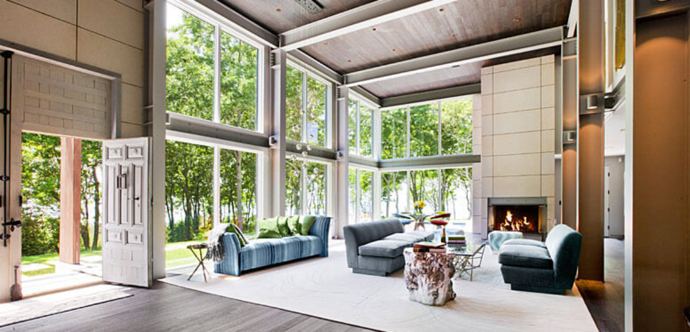
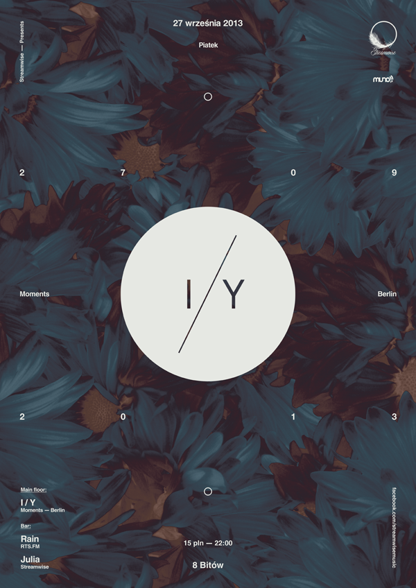

Good design is inspired by nature and good for nature.
Sustainable design is more important now than ever, and good design integrates beauty, function, and environmental consciousness. The vast amount of waste created by a variety of industries is contributing to an inhabitable future. Thus, recycled and recyclable/biodegradable materials, responsible sourcing, and an object's ability to exist as an integrated part of its environment are all important criteria for good design in today's world. Below are my general thoughts on and some specific examples of sustainable, nature-inspired design in five categories: Architecture, Fashion, Product Design, Interiors, and Graphic Design.
(For image/information sources and more information on the design, be sure to click on the images provided!)
Architecture
When it comes to architecture, energy efficiency, natural light sources and ventilation, and responsibly-sourced crafting materials are all elements of good architectural design. I also look for creativity and elements of nature--details that make visitors think about the natural world and their place within it. Architecture that not only embodies but also inspires ecological consciousness is the ideal here. Often, this type of design manifests itself as clean and modern, like in the examples below; however, even those with more traditional preferences may find that sustainable practices are feasible.

Garage House by Foomann Architects, December 2017, Melbourne, Australia
One of the more interesting sustainable architecture designs I found was a house/garage structure in Australia designed around the idea of adaptability. By freeing itself from constraints of purpose (it can be used as either a garage or a house), the building lends itself to long-term use. It also aims to reduce its inhabitants’ impact on the environment by packing a significant amount of function into a small space.
This building, to a large extent, fulfills Dieter Rams’ criteria for good design. It is not only functional and thoughtful, but it is also aesthetically pleasing without being over-the-top. I personally find it to be an incredibly creative way to ensure that a structure can be used by many people, for many purposes, over a long period of time.

Shanghai Natural History Museum by Perkins+Will, 2015, Shanghai
The Shanghai Natural History Museum has gained international repute for its focus on sustainability and eco-friendliness. The aesthetic design itself is ecologically inspired--it's made to resemble a nautilus shell, according to its designers--and ecologically friendly, using geothermal energy for temperature regulation and rain water collection devices. The museum is truly an example of modern and beautiful eco-friendly architecture.
This building pushes the boundaries of Dieter Rams' criteria, though it remains within a number of his guidelines. Despite its break from simplicity, it is very ecologically friendly, and it incorporates a great deal of innovation and thoroughness in every aspect of its design.
Fashion
Eco-friendly fashion at its core is about creating aesthetically-pleasing pieces with a smaller carbon footprint. When thinking about "good design" in this regard, I tend to look for clothing that is not only sustainable, but also inspired aesthetically by elements of nature. However, different people have different preferences, and not all sustainable fashion needs to include these aesthetic choices. I highly recommend checking out Emma Watson's Instagram blog, The Press Tour, for examples of sustainable fashion for all kinds of stylistic preferences.

EQT Support ADV Sneaker by Adidas, October 2017, United States
This sneaker, a redesign of a popular style from the 1990s, is made from ocean plastic and recycled rubber. Plastic waste has a devastating effect on ocean life, and through sneakers such as these, Adidas is working to keep plastic out of the world's oceans. The shoes are also aesthetically inspired by the oceans--a design choice evident in their tropical blue hues. From a style standpoint, the sneakers are both fashionable and functional; it is important to keep such criteria in mind to make sustainable fashion a viable option in society.
This footwear, to some extent, does fit into Dieter Rams' criteria for good design. They are eco-friendly, functional, and creatively made, and although they do incorporate some elements of trendiness (such as the their height and monochrome color scheme), they are fairly simple and unobtrusive in design. I'm personally amazed at how a recycled piece of clothing can be so seamlessly integrated into modern athleisure; clothing like this indicates a bright future for sustainable fashion.

Beauty and the Beast Release Dress by Elie Saab, February 2017, China
World-famous Emma Watson is an outspoken proponent of sustainable fashion. For a release event last year, she wore this Elie Saab dress made from scrap fabric that would normally have been discarded. The impact of textile waste is far larger than many of us tend to realize, and design such as this reduces the negative effects of the fashion industry on the planet. Although Ms. Watson has worn many different types of recycled and sustainable clothing to various events, I chose this dress for its incorporation of an earthy hue and branch-like designs. It is an exemplary blend between traditional and modern, fairy-tale and real-world awareness.
As for whether this dress fits Dieter Rams' category, I think it falls slightly out of line. It is quite obviously eco-friendly, but it is not entirely simple or under-designed. However, a trait that stands out to me is its timelessness. This dress is not ostentatiously modern; I think it easily fits into many decades of the past while remaining relevant to modern times.
Product Design
When I looked for "good" examples of product design, I found that many of the products I appreciated the most were not literal homages to nature. In other words, they were not necessarily made of natural materials or inspired aesthetically by nature, but their environmental consciousness took center stage regardless. In some ways, however, these products do imitate nature; for example, the smoothness in their shape subtly evokes the flowing quality of natural elements. Overall, though, the most noticeable quality of these products was their sustainability.

Tesla Model 3 by Tesla, 2017, United States
Perhaps the most famous eco-friendly design on this list, the Tesla Model 3 is a product that incorporates the trifecta of modern technology, eco-friendliness, and aesthetic beauty. As an electricity-powered vehicle pioneering the field of self-driving cars, Tesla maintains the level of function expected from a traditional vehicle, providing a way for eco-friendly design to seamlessly blend into the present and future. This model in particular is the most affordable in its line; although still rather pricey at $35,000, I do hope to see prices go down in the future. After all, in order for sustainable design to truly take off, it needs to be accessible to the masses.
I surprised myself when I first realized this, but the Model 3 truly does fit into Dieter Rams' criteria for good design. It is very thorough with each of its functions, but it does not claim to do more than it can do. It is innovative but lacks unnecessary frills; it is sustainable and sturdy; and it is designed to be similar to the cars society is more accustomed to driving, thus avoiding too much confusion for its users.

Bobble Water Bottle by Karim Rashid, 2010, United States
The Bobble Water Bottle is an alternative to regular plastic bottles, which are often improperly discarded and pose a risk to the environment. It lasts for months and makes all kinds of water accessible for drinking. When it comes time to dispose of the bottle, it is completely recyclable, thus minimizing its own footprint. It doesn't sacrifice beauty for function; its smooth shape and narrow center make the bottle easy to hold, and the loop on the lid also makes the bottle transportable. When it comes to sustainable product design, the Bobble is another mainstream product that exemplifies responsible design. Dieter Rams' criteria also fit nicely into this product's design; it is functional yet aesthetically pleasing, thoughtful yet simple, and pretty yet not "trendy" in the short-lived sense.
Interiors
Sustainable interior design is growing rapidly in popularity. Responsibly-sourced natural materials and energy efficiency are playing a large role in how modern interiors are designed. Personally, I look not only for sustainability in interior design, but also for visual reflections of nature. Large windows that incorporate natural light reduce the need for energy spent on artificial lighting; they also allow the outdoors to become a part of the interior decor. Along with this, furniture made from renewable resources like wood evokes a sense of being in nature while staying indoors.

Green Interior Awards Winner by Hare and Klein, March 2013, Coledale, New South Wales
I appreciated this room's step away from the green tones usually found in nature-inspired design. As much as I love green, the warm, earthy tones of this design are unique and show the versatility of sustainability. These interiors were praised particularly for their use of renewable natural resources, which is incredibly important in order to reduce harm to the environment. One of the biggest standout features to me is the large doorways; these provide for ample cross-ventilation and reduce the need for excessive temperature control. They also bring a breathability to the space, which I really appreciate. Dieter Rams' criteria do somewhat apply here in the simplicity and functionality of the chairs and the table, although the lamp does stray into more "fashionable" territory.

Sustainable Interior Design by Haleh Inc., May 2017, Location Unspecified
When I saw this image, I immediately wanted to be in the space it depicts. I really appreciate the way that the trees outside become part of the decor inside through this room's immense windows. As with the previous design, this type of space provides ample natural light and cross-ventilation, reducing the need for artificial light and temperature control. I also appreciated the dark wood used in the ceiling of the room; it was a unique aesthetic choice that is successful due to the openness of the rest of the room. In accordance with Dieter Rams, the design here is simple, straightforward, and functional, but it maintains beauty and creativity. However, on another hand, the room is not very space-efficient; the ceiling height may be slightly excessive for the room's overall purpose, and it could use some scaling down.
Graphic Design
"Good" graphic design, by my definitions, should attempt to use non-toxic ink and paints and recycled printing material as much as possible, if the design is being printed. I also personally enjoy designs that include natural textures and images, although not necessarily in the most traditional ways. From an aesthetic standpoint, "good" graphic design can come in many forms, but designers cannot afford to compromise on basic sustainability.

Poster by Dawid Sieradzki, September 2013, Poland
Although I can't read this poster, I chose to feature it because I enjoyed its subtler evocation of natural elements. When one thinks of floral patterns, one doesn't immediately think of modern design. This poster, however, shows that florals can be incorporated into a modern and even cool theme. It is creative, simple, subtle, easy to understand (given that one speaks German), and inspired by nature; in this way, it also fits into Dieter Rams' criteria quite nicely.

Earth Greetings Christmas Cards by Re-Nourish, Date Unspecified, Australia
When I saw this design, it immediately brought a smile to my face. These greeting cards make aesthetic beauty look playful and lighthearted while touching upon the very real and very important issue of sustainability. They are made of recycled materials, and they remind consumers of the reasons behind sustainability through their nature-inspired images. It's difficult to say whether these designs fit into Dieter Rams' criteria--after all, shouldn't a greeting card be somewhat frilly and fashionable?--but in many ways, they do. They are (of course) eco-friendly and aesthetically pleasing, and they serve their purpose in a clear way. I'm excited by this design's dedication to sustainability, and I think all future graphic design should follow its example in this regard. Of course, whether future designs are also visually inspired by nature is the designers' personal choice (although I think that it's always a nice touch).